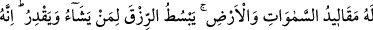
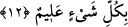

16/9)
et-Te’vîlâtü’n-Necmiyye’de şöyle denmiştir: Bir topluluk Allah’ın zâtını yaratıkların
zâtına benzetmişler, Allah’ı sınırlı ve sonlu olmakla, bir oluşum içinde ve bir mekânda
bulunmakla nitelemişlerdir. Bundan daha çirkini Allah’ı bir takım âzâ ve âletlerle
nitelemektir. Diğer bir topluluk sıfatlarda Allah’ı yaratıklara benzemeyle nitelemişler,
Allah’ın gözü, göz çukuru ve bu şekilde bir görme hassası var zannetmişlerdir. Aynı
şekilde yaratıklarda olduğu gibi kulağı, eli, ayağı vs. uzuvları var zannına
kapılmışlardır. Yine başka bir topluluk Allah’ın hükmünü kulların hükmüne kıyas edip
“Kullarda çirkin olan Allah’da da çirkindir. Kullarda güzel olan Allah’da da güzeldir”
demişlerdir. İşte bütün bu grup ve topluluklar teşbih ashabı olup Allah’ı kullara ve
yaratıklarına benzetmişlerdir. Allah Teâlâ bütün bunlardan münezzeh olup yarattıklarına
asla benzemez. Yine Allah Teâlâ hep faal olup hiç tatil ve atâlette olmaz. O, asla hiçbir
şeye benzemez. Allah birdir; sınırlı ve sonlu da değildir. Yine Allah bütün kemal
sıfatlara sahip olup her türlü ayıp ve noksandan uzaktır.
12. Göklerin ve yerin anahtarları O’nundur. Dilediğine rızkı bol verir,
dilediğinden de kısar. O, her şeyi bilendir.
“Göklerin ve yerin anahtarları” hazineleri “O’nundur. Dilediğine rızkı bol verir”
genişletir, “dilediğinden de kısar” daraltır. “O, her şeyi bilendir.” İlmi her şeyi
kuşatmıştır. Yaptığı her şeyi gereği üzere yapar.
Cevâlîkî Mu’arreb isimli kitabında şöyle demektedir: /miklîd, miftâh yani
anahtar demektir. Farsçadan Arapçaya geçmiştir. Çoğulu
’dür. Makàlîd, mefâtîh
yani anahtarlar demektir. Bu ifâde, hazînelerden ve bu hazînelere muktedir olup onları
korumaktan kinâyedir. Yine bu ifâde, hazînelerin yalnız Allah’a âid olduğu husûsuna
delâlet etmektedir. Çünkü ancak o hazînelerin anahtarlarına sahip olan kişi girip onlarda
istediği gibi tasarruf edebilir.
Kâşifî şöyle der: Göklerin ve yerin anahtarları yani rızık anahtarları; göklerin hazînesi
yağmur ile yerin hazînesi nebâttır.
İbn Atâ şöyle demiştir. Rızıkların anahtarları sağlam tevekkül, kalblerin anahtarları
sağlam mârifetullah, ilimlerin anahtarları ise açlıktır.
Şâirin ifâdesiyle:
Ten-perver kimseler bilmezler ki
Mide dolu olursa orada hikmet bulunmaz.